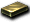
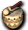

斯泰娜
我們伺服器實際的怪物設定（不是日版 wiki 的資料）。
能力值
| 項目 | 本伺服器 | 日版 wiki |
| 等級 | 70 | 110 |
| HP | 19355～22258 | 90556 |
| AC | -20 | -80 |
| MC | -5 | 0 |
| AAR | 20 | 20 |
| SAR | 40 | 40 |
| STR | 81 | 81 |
| DEX | 21 | 21 |
| INT | 21 | 21 |
| WIS | 21 | 21 |
| CON | 81 | 81 |
| 經驗值 | 0 | - |
| 名聲值 | 0 | - |
| 金錢 | 11891～12485 | 823~ |
| 攻擊屬性 | 隨機 | 隨機 |
| 防禦屬性 | 隨機 | 隨機 |
出現地圖
| 地圖 | 數量 | 出現位置 |
| 帕爾塞斯5 | 12～21 | 範圍 (20,20)-(130,130) |
掉落道具
| 道具 | 基本機率 |
| 帕爾塞斯之寶珠(大) | 100% |
| 斯坎達倫之護膝寶珠 | 5% |
 貝塔金屬板 | 0.26% |
| 艾德礦石 | 0.13% |
 艾德之鎧石 艾德之鎧石 | 0.13% |
| 伽瑪金屬板 | 0.19% |
 聖肉 聖肉 | 15% |
 神聖之粉 神聖之粉 | 15% |
| 杜爾礦石 | 0.09% |
 提爾之鎧石 提爾之鎧石 | 0.09% |
 [1次]劍2階段升級捲軸 [1次]劍2階段升級捲軸 | 0.01% |
| [1次]劍3階段升級捲軸 | 0.01% |
| [1次]斧2階段升級捲軸 | 0.01% |
| [1次]斧3階段升級捲軸 | 0.01% |
| [1次]短劍2階段升級捲軸 | 0.01% |
| [1次]短劍3階段升級捲軸 | 0.01% |
| [1次]寶珠2階段升級捲軸 | 0.01% |
| [1次]寶珠3階段升級捲軸 | 0.01% |
| [1次]杖2階段升級捲軸 | 0.01% |
| [1次]杖3階段升級捲軸 | 0.01% |
| [1次]指虎2階段升級捲軸 | 0.01% |
| [1次]指虎3階段升級捲軸 | 0.01% |
| [1次]豎琴2階段升級捲軸 | 0.01% |
| [1次]豎琴3階段升級捲軸 | 0.01% |
| [1次]槍2階段升級捲軸 | 0.01% |
| [1次]槍3階段升級捲軸 | 0.01% |
| [1次]劍卡2階段升級捲軸 | 0.01% |
| [1次]劍卡3階段升級捲軸 | 0.01% |
| [1次]魔法卡組2階段升級捲軸 | 0.01% |
| [1次]魔法卡組3階段升級捲軸 | 0.01% |
| [1次]彎刀2階段升級捲軸 | 0.01% |
| [1次]彎刀3階段升級捲軸 | 0.01% |
| 鯊魚腕鐲 | 0.05% |
 泰特拉之鼓 | 0.05% |
| 帕爾塞斯結晶 | 1% |
基本機率再乘上伺服器的掉寶倍率；「隨機一件」是從一組道具裡抽一件。